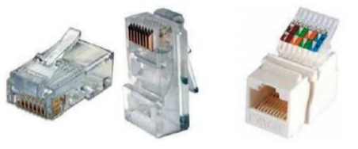
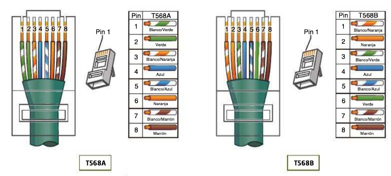
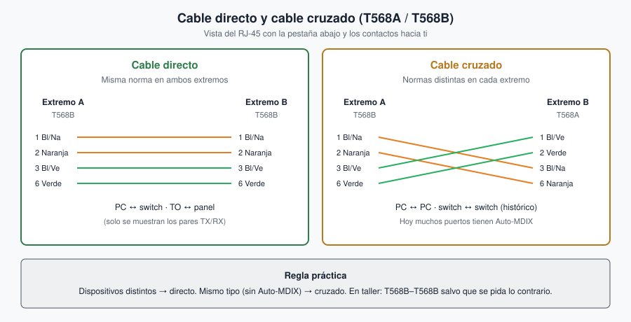
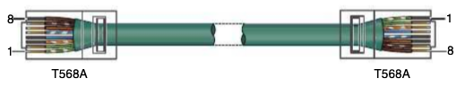
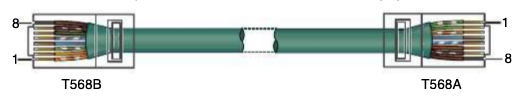
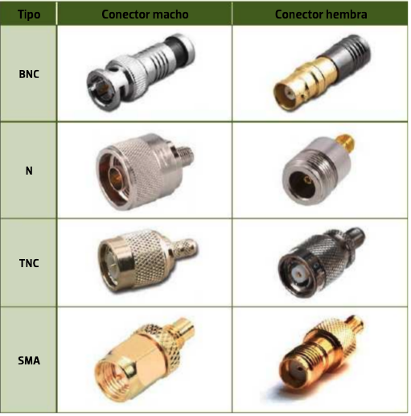
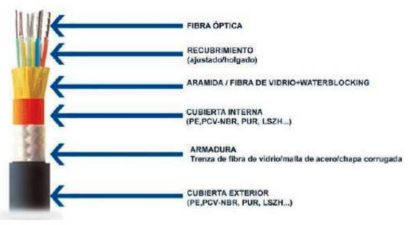
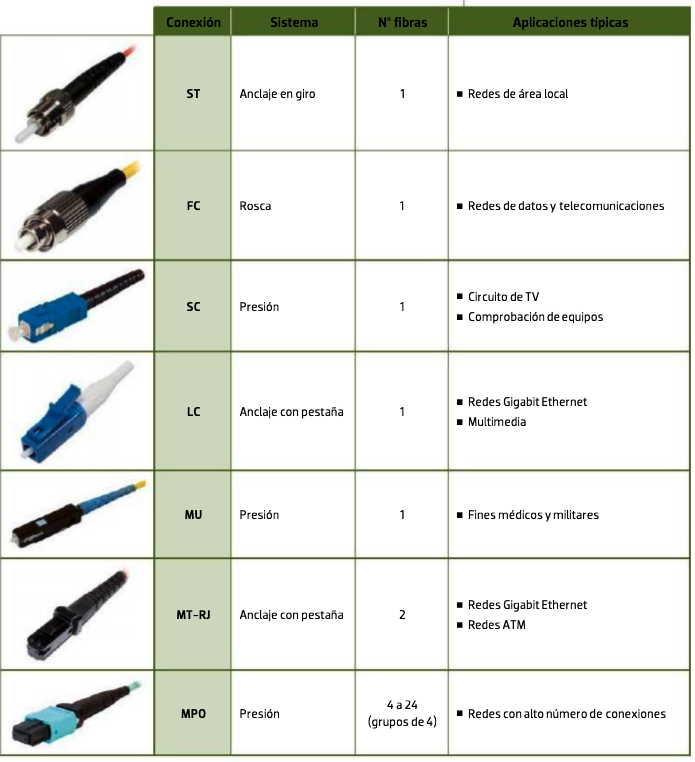
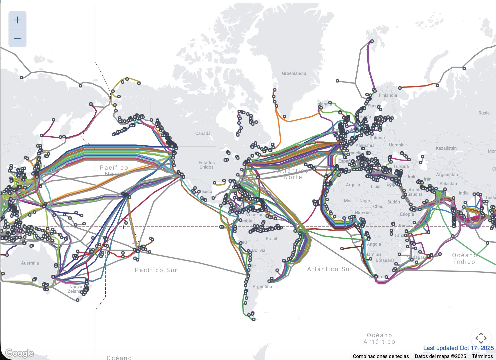
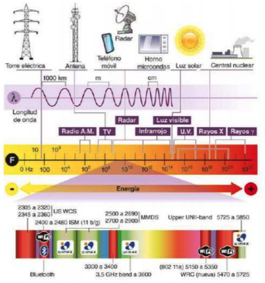

Tema 2. Medios de transmisión y capa física¶
En este tema bajamos a la capa física: qué medio usamos, qué categoría de cable, cómo se termina un RJ‑45 y cuándo conviene cobre, fibra o radio. Es el tema que más se nota en el taller cuando crimpas un latiguillo o eliges el cable en Packet Tracer.
Primera clase
Empieza por el cuestionario inicial. Si ya lo entregaste en Aules, usa el Autocheck del final para contrastar.
Cómo leerlo
Lee el párrafo de cada apartado antes de la tabla: qué es el concepto, para qué sirve y un ejemplo de aula o de casa. Practica de memoria el orden T568B: en el examen y en el crimpado no hay atajos. Los términos marcados enlazan al glosario. Cierra el tema con el Autocheck.
Propuesta didáctica¶
Trabajamos los RA2 y RA3 del módulo Redes de área local (0225):
RA2. Despliega el cableado de una red local interpretando especificaciones y aplicando técnicas de montaje.
RA3. Interconecta equipos en redes locales cableadas describiendo estándares de cableado y aplicando técnicas de montaje de conectores.
Criterios de evaluación (selección)¶
RA2
- CE2a: Se han reconocido los principios funcionales de las redes locales.
- CE2b: Se han identificado los distintos tipos de redes.
- CE2c: Se han diferenciado los medios de transmisión.
- CE2d: Se han reconocido los detalles del cableado de la instalación y su despliegue (categoría del cableado, espacios por los que discurre, soporte para las canalizaciones, entre otros).
- CE2h: Se han probado las líneas de comunicación entre las tomas de usuario y paneles de parcheo.
- CE2j: Se ha trabajado con la calidad y seguridad requeridas.
RA3
- CE3c: Se han montado conectores sobre cables (cobre y fibra) de red.
- CE3f: Se ha verificado la conectividad de la instalación.
- CE3g: Se ha trabajado con la calidad requerida.
Contenidos¶
- Medios guiados: par trenzado (categorías y blindaje), coaxial y fibra óptica.
- Conectores RJ‑45; terminaciones T568A / T568B; cable directo y cruzado.
- Medios no guiados: espectro básico y Wi‑Fi (IEEE 802.11).
- Crimpado de latiguillo y prueba de continuidad.
Programación de aula (orientativa, ~14–16 h)¶
| Sesiones | Contenidos | Actividades |
|---|---|---|
| 1 | Presentación + cuestionario inicial | Cuestionario |
| 2–3 | Par trenzado: categorías, blindaje, RJ‑45 | AC201 |
| 4 | Coaxial | AC202 |
| 5–6 | Fibra óptica (tipos, conectores) | AC203 |
| 7–8 | Medios no guiados y Wi‑Fi 802.11 | AC204 |
| 9–11 | Crimpado T568A/B + comprobador + etiquetado | PR201 |
| 12–14 | Packet Tracer: capa física | PR202 |
| 15–16 | Repaso / ampliación si hace falta | — |
Cuestionario inicial¶
Antes de empezar — responde con lo que sepas
- ¿Qué categorías de cable de par trenzado conoces y para qué se usan?
- ¿Cuándo conviene fibra óptica frente a cobre?
- ¿Qué diferencia hay entre medios guiados y no guiados?
- ¿Qué es el espectro electromagnético y por qué importa en redes?
- ¿Qué estándares IEEE 802.11 conoces (Wi‑Fi)?
- ¿Qué conectores se usan con par trenzado en Ethernet?
- ¿En qué se diferencian las terminaciones T568A y T568B?
- ¿Qué es un cable directo y un cable cruzado?
El cuestionario inicial ya está cerrado en Aules. Ahora puedes contrastar con el Autocheck del final: las soluciones van plegadas al final de esa lista.
Medios de transmisión¶
La información viaja como señal eléctrica, óptica o de radiofrecuencia. El medio es el enlace entre emisor y receptor: de su naturaleza dependen el alcance, la velocidad, el coste y las vulnerabilidades (interferencias, atenuación, seguridad física).
Para qué sirve clasificar medios. En un pliego o en un examen te pedirán elegir cobre, fibra o radio con un motivo: metros, EMI, presupuesto o movilidad.
Ejemplo. Del switch del aula al PC usas UTP Cat. 6; entre dos edificios del instituto, fibra; en la biblioteca, Wi‑Fi para portátiles.
Medios guiados y no guiados¶
En un medio guiado la señal está confinada en un conductor: par trenzado, coaxial o fibra. En un medio no guiado se propaga por el espacio (radio, microondas, infrarrojos). En el aula usarás casi siempre UTP hacia el puesto y Wi‑Fi para portátiles; la fibra aparece en el backbone o entre edificios.
| Tipo | Idea | Ejemplos en LAN |
|---|---|---|
| Guiados | La señal va por un conductor físico | UTP/FTP, coaxial, fibra |
| No guiados | Propagación por el aire (u otro medio sin cable) | Wi‑Fi, radioenlaces |
| Medio | Ventaja típica | Límite / cuidado | Uso en el instituto |
|---|---|---|---|
| Cobre (UTP) | Barato, fácil de crimpar | 100 m; EMI y diafonía | Puesto de trabajo ↔ switch |
| Fibra | Larga distancia, inmune a EMI | Coste y empalme/conectores | Entre edificios / backbone |
| Inalámbrico | Movilidad | Interferencias, cobertura | Portátiles, aulas abiertas |
Par trenzado¶
El cable de par trenzado lleva ocho hilos agrupados en cuatro pares, con cubierta exterior (habitualmente PVC). El trenzado reduce la diafonía: cada par se enrolla para que las interferencias entre hilos se cancelen en parte. Sin trenzado, a más velocidad y más metros, el enlace falla antes.
Según la norma habitual, el par 1 es azul y blanco‑azul, el par 2 naranja y blanco‑naranja, el par 3 verde y blanco‑verde, y el par 4 marrón y blanco‑marrón. Esos colores son los que ordenas al crimpar el RJ‑45.
Ejemplo real. El latiguillo que va de tu mesa al panel del armario del aula es, casi seguro, UTP de cuatro pares; la categoría (5e, 6, 6a…) la marca el pliego o el material del taller.
Categorías¶
La categoría del cable indica el rendimiento que el fabricante garantiza (ancho de banda y, con ello, velocidades Ethernet típicas a cierta distancia). No es un «adorno del plástico»: si pones Cat. 5e donde el pliego pide Cat. 6a, el enlace de 10 Gbps no estará asegurado a 100 m.
En obra nueva educativa u oficina lo habitual es Cat. 6 o Cat. 6a. Cat. 3 y Cat. 5 están obsoletas. Cat. 8 se reserva a tramos cortos de centros de datos (25/40 Gbps).
| Categoría | Ancho de banda (aprox.) | Uso típico |
|---|---|---|
| Cat. 5e | 100 MHz | Hasta 1 Gbps (instalaciones básicas) |
| Cat. 6 | 250 MHz | 1 Gbps a 100 m; 10 Gbps a distancias cortas |
| Cat. 6a | 500 MHz | 10 Gbps a 100 m |
| Cat. 8 | 2000 MHz | 25/40 Gbps a distancias cortas (centros de datos) |
Ejemplo de elección. Para un aula nueva con switches a 1 Gbps, Cat. 6 es una elección sólida y habitual. Si el centro prevé 10 Gbps hasta el puesto, mira Cat. 6a.
Para la certificación CCNA
Nombres clásicos de Ethernet sobre cobre: 10BASE‑T (10 Mbps), 100BASE‑TX (100 Mbps) y 1000BASE‑T (1 Gbps). En 100BASE‑TX solo se usan los pines 1, 2, 3 y 6 del RJ‑45 (dos pares); en Gigabit se usan los cuatro pares.
Perturbaciones en cobre¶
En el cableado horizontal Ethernet el límite habitual es 100 m en total: unos 90 m de enlace permanente (toma de usuario ↔ panel) más 10 m repartidos en latiguillos. Si te pasas, la atenuación y el ruido ganan.
- Atenuación: la señal se debilita con la distancia y con empalmes mal hechos.
- EMI / RFI: interferencia electromagnética o de radio (motores, fluorescentes, walkie‑talkies cerca del cable).
- Diafonía (NEXT): un par «habla» al vecino dentro del mismo cable (Near-End Crosstalk). El trenzado y una categoría adecuada reducen ese acoplamiento.
Si en el taller el tester marca fallo a 120 m de cable enrollado, no es magia: has incumplido la distancia y empeorado la diafonía.
Errores frecuentes
Confundir categoría con blindaje. Cat. 6 describe el rendimiento; U/UTP o F/UTP describe si hay pantalla. Puedes tener Cat. 6 U/UTP o Cat. 6 F/UTP: son cosas distintas.
Blindaje (apantallamiento)¶
El blindaje añade una o varias pantallas metálicas (foil o malla) para reducir la EMI (Electromagnetic Interference, interferencia electromagnética) en entornos ruidosos (talleres con maquinaria, proximidad a motores, etc.). En aulas normales suele bastar el cable sin pantalla.
| Tipo | Idea | Cuándo |
|---|---|---|
| U/UTP | Sin pantalla (el «UTP» clásico) | Oficinas / aulas con poca EMI |
| F/UTP (a menudo llamado FTP) | Pantalla global de foil alrededor de los cuatro pares | Interferencias moderadas |
| S/FTP | Pantalla global + pares apantallados | Entornos con EMI alta |
Si hay pantalla, hay que cuidar la puesta a tierra del blindaje según la instalación. Un cable apantallado mal conectado a tierra puede empeorar el problema en lugar de mejorarlo.
Nomenclatura en el día a día
En albaranes oirás UTP, FTP, STP… Quédate con la idea práctica: ¿hay pantalla o no? ¿Hay que aterrizar el conector metálico?
Conector RJ‑45¶
En Ethernet sobre cobre usamos el conector RJ‑45 (8P8C: ocho posiciones, ocho contactos). Puede ser no apantallado o con carcasa metálica si el cable lleva pantalla. La pestaña evita que se suelte; al crimpar, los contactos perforan el aislante de cada hilo.

Terminaciones T568A y T568B¶
La norma TIA/EIA‑568 define dos ordenaciones de colores en el conector: T568A y T568B. No son «dos cables distintos» de fábrica: son dos formas de colocar los mismos ocho hilos. Entre A y B solo se intercambian los pares naranja y verde; azul y marrón no cambian.
Para qué sirve memorizarlo. Si mezclas A y B en un latiguillo que debía ser directo, el comprobador marcará error y el enlace no subirá bien.

| Pin | T568A | T568B |
|---|---|---|
| 1 | Blanco/verde | Blanco/naranja |
| 2 | Verde | Naranja |
| 3 | Blanco/naranja | Blanco/verde |
| 4 | Azul | Azul |
| 5 | Blanco/azul | Blanco/azul |
| 6 | Naranja | Verde |
| 7 | Blanco/marrón | Blanco/marrón |
| 8 | Marrón | Marrón |
Truco
Entre T568A y T568B solo se intercambian los pares naranja y verde. El azul y el marrón no cambian.
Qué usar en la práctica
En muchas instalaciones reales se usa T568B de extremo a extremo. Lo crítico: misma norma en ambos extremos del tramo horizontal (salvo que quieras un cable cruzado a propósito).
Cable directo y cruzado¶
Un cable directo lleva la misma terminación en ambos extremos (T568B–T568B o T568A–T568A). Es el que usas casi siempre: PC ↔ switch, toma de usuario ↔ panel de parcheo, router ↔ switch.
Un cable cruzado combina T568A en un extremo y T568B en el otro. Históricamente unía equipos «iguales» (PC–PC, switch–switch) porque cruzaba los pares de transmisión y recepción. Hoy la mayoría de puertos Gigabit implementan Auto‑MDIX (Automatic Medium-Dependent Interface Crossover): el puerto detecta el cruce y acepta un cable directo. Aun así, en Packet Tracer y en exámenes te pueden pedir el cable que marca la tabla o la norma antigua.



Errores frecuentes
Pensar que «cruzado = más rápido» es falso. El tipo de cable no sube la velocidad: solo adapta TX/RX cuando hace falta. Otro error: mezclar A y B en un latiguillo «directo» sin querer; el tester marcará pares cruzados.
Sin Auto‑MDIX (tabla clásica de examen / Packet Tracer):
| Conexión | Cable |
|---|---|
| PC ↔ switch | Directo |
| Router ↔ switch | Directo |
| PC ↔ router (puerto Ethernet) | Cruzado |
| Switch ↔ switch | Cruzado |
| PC ↔ PC | Cruzado |
Cable de consola. En Packet Tracer (y en el rack) el cable de consola no es un latiguillo Ethernet de datos: une el PC al puerto de consola del router o switch para configurarlo por línea de comandos (en equipos Cisco clásicos, RJ‑45 en el dispositivo y DB‑9 o USB en el PC, según el adaptador).
Cable coaxial¶
El coaxial tiene conductor central, dieléctrico, malla o pantalla y cubierta. Resiste bien la EMI y en ciertos escenarios atenúa menos que el UTP, pero en LAN Ethernet modernas está en desuso (topologías de bus 10BASE2/10BASE5).
Dónde se sigue usando. TV, antenas, HFC del operador de cable, radiofrecuencia de laboratorio. En el aula de redes lo verás más en ejemplos históricos o en el rack de TV del centro que en el puesto Ethernet.

En Ethernet antiguo (10BASE2) se usaba BNC y terminadores en los extremos del bus. Tipos que aún verás citados:
| Tipo | Uso típico |
|---|---|
| RG‑58 | Ethernet antiguo 10BASE2 (obsoleto en LAN) |
| RG‑59 / RG‑6 | TV / vídeo / HFC |
| RG‑8 | Ethernet grueso histórico (10BASE5) |
Fibra óptica¶
La fibra óptica transporta luz por un núcleo de vidrio o plástico rodeado de un revestimiento (cladding) que mantiene la luz dentro por reflexión. El emisor (LED o láser) convierte la señal eléctrica en pulsos de luz; el receptor (fotodiodo) hace lo contrario. No hay corriente eléctrica en el núcleo: por eso la EMI de un motor o de una línea de fuerza apenas afecta al enlace.
Ventajas: gran ancho de banda, poca atenuación a larga distancia, inmunidad a la EMI y más dificultad para interceptar el medio sin dejar rastro. Inconvenientes: coste, herramientas de corte/empalme, limpieza de conectores y cuidado con el láser (no mirar al extremo activo). El UTP del puesto sigue ganando en precio y facilidad de crimpado.

Multimodo (MM) y monomodo (SM)¶
La diferencia clave es el diámetro del núcleo y, con él, cuántos modos (caminos) de luz viajan por dentro.
En fibra multimodo (MM) el núcleo es relativamente ancho (~50–62,5 μm). Varios modos de luz se propagan a la vez; el emisor suele ser LED o láser VCSEL. Sirve para campus, edificios y distancias cortas o medias.
En fibra monomodo (SM) el núcleo es muy fino (~9 μm). Idealmente viaja un solo modo; el emisor es láser. Permite largas distancias (kilómetros): backbone de operadores, enlaces entre sedes, cables submarinos.
| Tipo | Núcleo (orden) | Emisor típico | Uso |
|---|---|---|---|
| Multimodo | ~50–62,5 μm | LED / láser VCSEL | Campus, edificios, cortas–medias distancias |
| Monomodo | ~9 μm | Láser | Largas distancias, backbone, operadores |
Clases habituales: OM1–OM4 (multimodo) y OS1/OS2 (monomodo). A 10 Gbps, de forma orientativa, OM3 alcanza unos 300 m y OM4 unos 400 m; para distancias mayores se pasa a monomodo (OS2).
| Clase | Tipo | Uso orientativo |
|---|---|---|
| OM1 / OM2 | Multimodo (legado) | 1 Gbps en distancias cortas; evitar en obra nueva |
| OM3 | Multimodo | 10 Gbps hasta ~300 m |
| OM4 | Multimodo | 10 Gbps hasta ~400 m |
| OS1 / OS2 | Monomodo | Largas distancias y backbone |
Ejemplo. Entre el rack del aulario y el del edificio principal, a 150 m y 10 Gbps, OM3 o OM4 encajan; a varios kilómetros hacia otro centro, monomodo.
Estructuras de cable: loose-tube (exteriores / tendidos largos, a menudo con gel) y tight-buffered (interiores, más fácil de conectar).
Errores frecuentes
Mezclar MM y SM en el mismo enlace no funciona. Tampoco mires al láser de fibra: riesgo ocular. En taller, protectores de polvo en los conectores y limpieza antes de enchufar.
Conectores¶
Los conectores más citados son ST, SC, LC y MPO. En racks modernos es muy frecuente el LC (compacto). El SC (cuadrado, push-pull) sigue viéndose en instalaciones anteriores. El ST (bayoneta) es más antiguo.

Escala global (contexto)¶
La fibra submarina es la columna vertebral de Internet:

Medios no guiados y Wi‑Fi básico¶
Sin cable, la señal se propaga como onda electromagnética. El espectro se reparte en bandas para que servicios distintos no se interfieran. En España, la atribución oficial se recoge en el CNAF.

ISM significa bandas de uso industrial, científica y médica (Industrial, Scientific and Medical): frecuencias donde conviven muchos dispositivos sin licencia exclusiva. Para Wi‑Fi te interesan sobre todo las ISM de 2,4 GHz y 5 GHz. La banda de 6 GHz llega con Wi‑Fi 6E (y sigue en Wi‑Fi 7), no con el Wi‑Fi 6 «a secas».
Otros medios no guiados que debes situar:
| Tecnología | Idea | Alcance típico |
|---|---|---|
| Bluetooth | IEEE 802.15 (WPAN, red de área personal) | Unos 10 m (auriculares, teclado) |
| NFC | Near Field Communication | Pocos cm (pago con el móvil) |
| Infrarrojos | Necesitan línea de visión directa | Corto (mando del proyector del aula) |
«Wi‑Fi» es una marca de la Wi‑Fi Alliance que certifica productos conformes con IEEE 802.11. No significa «Wireless Fidelity» (eso es un mito de marketing); el estándar técnico es 802.11.
A 2,4 GHz hay más alcance relativo (atraviesa mejor algunas paredes) y, a la vez, más interferencias: microondas, Bluetooth, redes de vecinos y pocos canales que no se solapen (en la práctica se usan sobre todo 1, 6 y 11). A 5 GHz (y 6 GHz) suele haber más canal libre y más capacidad, con menos penetración en paredes: el portátil del fondo del aula a veces «prefiere» 2,4 GHz aunque sea más lento.
Los canales dividen la banda en franjas de frecuencia. Si dos puntos de acceso vecinos usan el mismo canal a alta potencia, compiten y baja el rendimiento. En un instituto conviene planificar canales y potencia para que las aulas no se pisen: no basta con «poner muchos AP»; hay que separarlos en frecuencia.
IEEE 802.11¶
Cada generación de Wi‑Fi mejora velocidad, eficiencia o el uso del espectro. No hace falta memorizar todos los Mbps de marketing: sí conviene situar el nombre comercial, el estándar y las bandas.
| Generación | Estándar | Bandas | Idea |
|---|---|---|---|
| Wi‑Fi 4 | 802.11n | 2,4 / 5 GHz | MIMO; hasta cientos de Mbps |
| Wi‑Fi 5 | 802.11ac | 5 GHz | MU‑MIMO; orden de Gbps |
| Wi‑Fi 6 | 802.11ax | 2,4 / 5 GHz | Mejor eficiencia en entornos densos |
| Wi‑Fi 6E | 802.11ax (ext.) | 2,4 / 5 / 6 GHz | Misma generación 6 con banda de 6 GHz |
| Wi‑Fi 7 | 802.11be | 2,4 / 5 / 6 GHz | Mayor capacidad en entornos exigentes |
El montaje y la configuración de puntos de acceso se profundiza en el Tema 3.
Para la certificación CCNA
En ITN aún salen los estándares antiguos: 802.11a (5 GHz, hasta 54 Mbps), 802.11b (2,4 GHz, hasta 11 Mbps) y 802.11g (2,4 GHz, hasta 54 Mbps). Hoy están en desuso frente a Wi‑Fi 4/5/6/6E/7, pero el examen puede pedir banda y velocidad aproximada. Wi‑Fi usa CSMA/CA (prevención de colisiones), no CSMA/CD.
Errores frecuentes
Decir «Wi‑Fi es capa 3» mezcla modelos: Wi‑Fi (802.11) trabaja en capas físicas y de enlace; las direcciones IP siguen siendo de capa 3. Otro clásico: pensar que 5 GHz «siempre es mejor» sin mirar cobertura: a veces el portátil del fondo del aula necesita 2,4 GHz.
Crimpado de latiguillo¶
Materiales y herramientas habituales: cable UTP de la categoría indicada, dos conectores RJ‑45, pelacables, crimpadora RJ‑45, cutter y comprobador de cable (tester).
En taller fabricamos un latiguillo UTP con dos RJ‑45. El objetivo no es solo que «encaje»: tiene que pasar el comprobador y quedar etiquetado.
- Cortar a medida y pelar la cubierta (sin dañar los pares; deja unos 2–3 cm de hilos).
- Deshacer el trenzado lo mínimo necesario y ordenar colores según T568B (o la norma que indique el profesorado).
- Cortar hilos a la misma longitud e insertarlos hasta el fondo del conector (el aislamiento de la cubierta debe entrar un poco en el conector).
- Crimpar de un solo golpe con la herramienta adecuada; comprobar que los contactos han bajado.
- Repetir en el otro extremo (misma terminación → cable directo).
- Probar con comprobador de cable / continuidad (y, si hay, tester de cableado o certificación).
- Etiquetar el latiguillo (código que indique el profesor).
Calidad y seguridad
Gafas si el taller lo exige; no pellizcar el cable; no dejar hilos fuera del conector; etiquetar el latiguillo. Un crimpado malo falla en producción aunque «parezca» enchufado.
Errores frecuentes
Pares invertidos o cruzados; funda que no entra en el conector; crimpar dos veces; olvidar el tester; no etiquetar. Si el comprobador falla, abre, identifica el error y rehace: no «repite a ciegas».
El detalle de paneles, tomas de usuario y canalizaciones se desarrolla en el Tema 3.
Actividades¶
Formato de entrega
Las entregas en Aules son obligatorias en Markdown (.md). No se aceptan PDF.
Nombre del archivo: AC2XX.md o PR2XX.md (sustituye XX por el número). Respeta la fecha de vencimiento.
Escribiremos los .md con Visual Studio Code.
Cómo empezar
- Guía de Markdown: tutorialmarkdown.com/guia
- Documentación de Visual Studio Code: code.visualstudio.com/docs
AC201 — Categorías UTP¶
- AC201. (RA2 // CE2c, CE2d // AC 0–1). Elabora una tabla comparativa de categorías de par trenzado (al menos 5e, 6, 6a y 8): ancho de banda, velocidades típicas, distancia y usos. Indica cuál elegirías para un aula y por qué.
AC202 — Coaxial¶
- AC202. (RA2 // CE2c // AC 0–1). Resume estructura del coaxial, tipos/aplicaciones (RG‑58, RG‑6…), conectores (BNC, etc.) y ventajas/desventajas frente a UTP en LAN actuales.
AC203 — Fibra óptica¶
- AC203. (RA2 // CE2c // AC 0–1). Explica principio de funcionamiento, MM vs SM, clases OM/OS, conectores habituales, ventajas/desventajas y precauciones de manipulación.
AC204 — Medios no guiados / Wi‑Fi¶
- AC204. (RA2 // CE2a, CE2b, CE2c // AC 0–1). Compara medios no guiados (radio, microondas, IR…) y resume estándares 802.11 (Wi‑Fi 4/5/6): bandas, idea de velocidad y un uso típico cada uno. Relaciónalo con tipos de red (WLAN / LAN mixta).
PR201 — Crimpado UTP (T568A/B) + comprobador + etiquetado¶
| Campo | Valor |
|---|---|
| Código | PR201 |
| UP / tema | T2 — Medios y capa física |
| RA principal | RA3 (montaje de conectores y verificación). Apoyo: RA2 (prueba de líneas), RA6 (PRL/EPI) |
| CE de cobertura | CE3c, CE3f, CE3g · CE2h, CE2j · CE6b, CE6e |
| Sesiones estimadas | 2–3 |
| Instrumento | Checklist de taller + rúbrica 0–10 |
- PR201. En taller, en pareja: fabricad un latiguillo UTP directo con terminación T568B en ambos extremos (el profesor puede pedir un extremo en T568A para contrastar el estándar). Probad con el comprobador, etiquetad el cable y documentad el proceso.
Enunciado (pasos):
- Materiales: UTP de la categoría indicada, 2× RJ‑45, pelacables, crimpadora, cutter, comprobador, etiquetas.
- Pelar ~2–2,5 cm; ordenar pares según el esquema (T568B por defecto); cortar a la misma longitud; insertar hasta el tope (la funda entra en el conector).
- Crimpar de un solo golpe; repetir el otro extremo.
- Probar en el comprobador (continuidad / pares / polaridad). Si falla: abrir, identificar el error y rehacer.
- Etiquetar (código que indique el profesor, p. ej.
PR201-Gx-nn). - Entregar el cable físico + evidencias digitales.
Errores típicos a evitar / documentar si ocurren: pares cruzados o invertidos; hilos fuera del conector; funda que no entra; crimpado doble o incompleto; no etiquetar; ignorar EPI (gafas si el taller lo exige).
Evidencia: latiguillo OK al tester + foto de ambos extremos (colores visibles) + foto/captura del comprobador + checklist firmada + PR201.md.
Entrega: PR201.md + evidencias según Aules.
| Criterio (rúbrica) | Descripción | Puntos |
|---|---|---|
| Procedimiento | Pasos claros, ordenados y seguros | 0–2 |
| Terminación T568A/B | Colores correctos en ambos extremos | 0–2 |
| Prueba | Evidencia de continuidad / OK del tester | 0–2 |
| Calidad + etiquetado | Acabado, sin hilos fuera, etiqueta legible | 0–2 |
Informe .md |
Completo, con fotos y errores/correcciones | 0–2 |
| Total | /10 |
PR202 — Packet Tracer: capa física¶
- PR202. (RA2 // CE2c, CE2d // RA3 // CE3f // Certificación · suma en el +1). En Packet Tracer identificas puertos y módulos, insertas los que faltan, cableas la topología según la tabla y compruebas la conectividad física.
Antes: guía inicial de Packet Tracer (sesión iniciada) y el fichero PR202.pka de Aules.
Guion: PR202 — Conectar la capa física (también en Aules).
Entrega: PR202.pka + PR202.md (capturas y respuestas).
Es trabajo para casa del apartado de Certificación: no puntúa en la nota de los RA y cuenta para la parte de prácticas del +1 (0,5 puntos) si la entregas y la defiendes en clase (auditoría oral breve o demo). La rúbrica sirve para revisarla cuando haga falta.
| Criterio | Descripción | Puntos |
|---|---|---|
| Identificación de puertos y módulos | Respuestas correctas sobre administración, LAN/WAN, ranuras y comandos show |
2 |
| Módulos insertados correctamente | Módulos adecuados en Este y Switch2, insertados con el equipo apagado | 2 |
| Cableado según la tabla | Todos los enlaces con el tipo de cable e interfaces indicados | 2 |
| Verificación | Comandos, navegador a www.cisco.pka, Check Results al 100 % |
2 |
| Entrega | .pka que abre bien y .md claro, respuestas correctas, sin datos personales |
2 |
| Total | /10 |
Para el examen¶
El medio puede ser guiado (UTP, coaxial, fibra) o no guiado (Wi‑Fi, Bluetooth, NFC, IR…). En cobre: 100 m (90 + 10), categoría, trenzado frente a atenuación/EMI/NEXT. Ethernet usa RJ‑45 con T568A o T568B. Cable directo = misma norma; cruzado = A+B (sin Auto‑MDIX: ver tabla). ISM = industrial, científica y médica. «Wi‑Fi» es marca de la Wi‑Fi Alliance sobre 802.11. Fibra MM / SM según distancia. En taller: crimpar, probar y etiquetar.
Autocheck del tema¶
- V/F. Cat. 6 y F/UTP significan lo mismo.
- Empareja: U/UTP · F/UTP · multimodo · monomodo con: (a) sin pantalla · (b) pantalla global de foil · (c) núcleo ~9 μm · (d) núcleo ~50–62,5 μm.
- En un cable directo T568B–T568B, el pin 1 es…
a) Blanco/verde · b) Blanco/naranja · c) Azul · d) Marrón - V/F. Un cable cruzado se obtiene poniendo T568A en un extremo y T568B en el otro.
- ¿Qué conector usa Ethernet sobre par trenzado en el puesto de trabajo?
- Elige la correcta: Auto‑MDIX…
a) sube la categoría del cable · b) permite que el puerto adapte TX/RX y acepte directo en muchos casos · c) solo existe en fibra - Relaciona: Wi‑Fi 5 · Wi‑Fi 6 · 802.3 con: (a) Ethernet · (b) 802.11ac · (c) 802.11ax
- V/F. La fibra monomodo es la elección típica para el latiguillo del PC al switch del aula.
- Nombra dos ventajas de la fibra frente al UTP.
- ¿Qué pares se intercambian entre T568A y T568B?
- V/F. A 2,4 GHz suele haber más interferencias de redes vecinas y otros dispositivos ISM que a 5 GHz.
- En el crimpado, ¿qué compruebas antes de entregar el latiguillo?
- V/F. La banda de 6 GHz forma parte del Wi‑Fi 6 «a secas» (sin 6E).
- A 10 Gbps, ¿qué distancia orientativa tiene OM3 y cuál OM4?
- ¿Por qué se trenzan los pares del cable UTP?
Soluciones
-
Falso — categoría ≠ blindaje.
-
U/UTP → (a); F/UTP → (b); monomodo → (c); multimodo → (d).
-
b) Blanco/naranja.
-
Verdadero.
-
RJ‑45 (8P8C).
-
b.
-
Wi‑Fi 5 → (b); Wi‑Fi 6 → (c); 802.3 → (a).
-
Falso — al puesto suele ir UTP; la monomodo es para largas distancias / backbone.
-
Ejemplos: más ancho de banda / distancia, inmunidad a EMI, más difícil de interceptar.
-
Los pares naranja y verde.
-
Verdadero.
-
Continuidad / pares correctos en el comprobador (y etiquetado).
-
Falso — 6 GHz llega con Wi‑Fi 6E (y Wi‑Fi 7).
-
OM3 ~300 m; OM4 ~400 m.
-
Para reducir la diafonía (interferencia entre pares).
Vídeos recomendados¶
Pablo Hidalgo explica cobre y UTP (CCNA v1.1, lección 3).
Pablo Hidalgo explica la fibra óptica (lección 4).
Joaquín Cantero muestra en práctica el cableado T568A y T568B.
Contando Bits resume Wi‑Fi y el estándar 802.11.
Alberto López explica cómo funciona el Wi‑Fi.
Glosario¶
par trenzado Cable de cuatro pares de hilos de cobre trenzados. Base del cableado Ethernet en el puesto de trabajo (UTP y variantes apantalladas).
RJ-45 Conector 8P8C usado en Ethernet sobre par trenzado.
T568A / T568B Dos ordenaciones de colores del RJ‑45 según TIA/EIA‑568. Entre ellas solo cambian los pares naranja y verde.
Auto-MDIX Automatic Medium-Dependent Interface Crossover: el puerto detecta si hace falta cruzar TX/RX y acepta cable directo en muchos equipos modernos.
EMI Electromagnetic Interference, interferencia electromagnética: ruido eléctrico que puede degradar la señal en cobre.
coaxial Cable con conductor central, dieléctrico y malla. Histórico en Ethernet de bus; vigente en TV/RF.
fibra Medio óptico que transporta luz. Gran ancho de banda e inmunidad a EMI.
multimodo Fibra de núcleo relativamente ancho (~50–62,5 μm) para distancias cortas/medias en edificios y campus.
monomodo Fibra de núcleo fino (~9 μm) para largas distancias y backbones.
UTP Unshielded Twisted Pair: par trenzado sin pantalla (U/UTP en nomenclatura ISO).
diafonía Interferencia entre pares cercanos dentro del cable; el trenzado la reduce.
Relación con el resto del módulo¶
El Tema 1 te dio dispositivos, capas y dominios. Aquí materializas la capa física. En el Tema 3 montas el cableado estructurado (paneles, TO, armarios, fibra en edificio). Más adelante, el enlace y la IP asumen que el medio físico ya está bien elegido y terminado. Las prácticas PR201 (crimpado) y PR202 (Packet Tracer de capa física) son la evidencia de este tema.
Referencias rápidas¶
- Sitio del módulo: fjavier-hernandez.github.io/ral
- Mapa de fibra submarina: submarinecablemap.com
- Simulación: Cisco Packet Tracer
- Entregas: Visual Studio Code + Markdown
- Normas: Normas del taller